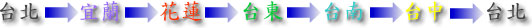
昨夜睡得很舒適，有冷氣的宿舍果然不同凡響，涼快好睡！
只可惜沒人相伴左右，如果我同學是女生的話，那就更完美了 :P
隔天早上九點起床，他要去學校工讀，我也該出門上路了。
九點離開同學家，看到台一線的牌子，下面這個數字是倒數計時的。
等我把這三百多公里騎完之後，就回到台北了！
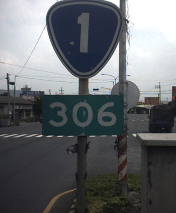
早餐在十點多的時候，去全家便利商店吃。
買了兩罐波蜜果菜汁（因為第二件六折），一個三明治，這樣是44元。
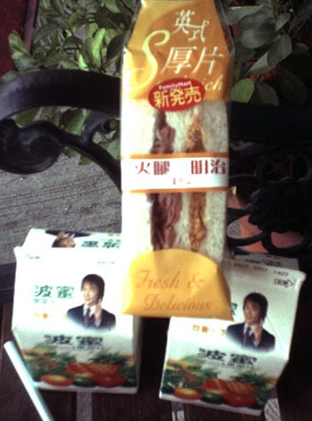
今天很悶，我還沒寫遊記，就覺得寫出來的遊記看起來一定會很悶。
騎乘單車的時候，照片沒什麼在拍，因為根本就沒有風景可言。
從台南騎到台中，風景都是一個樣，真是悶死了。
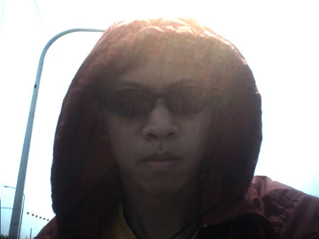
昨天不小心掉下去，結果被機車碾過，卻依然安好無恙的手機，今天卻離我而去了。
我不知道在什麼時候又弄掉了它，應該又是從褲子口袋掉下去。
等我發現手機掉了的時候，往回騎了一段路去找，但是找沒有...
用公共電話打給自己的手機，結果進語音信箱，那很明顯....被撿走了 /_\
趕快再接著打客服專線，把手機先停話....補卡要花300元，還要重買一隻手機。
中午我在嘉義吃魯肉飯+關東煮，45元。
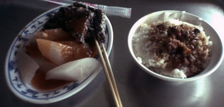
下午兩點二十分，強烈的睡意襲來，很想睡覺。同時刻，大雨襲來！！！
看到一家漫畫店，就把車子停在屋簷下，雨淋不到的地方，然後去裡面看了一本漫畫。
我一邊看一邊睡...外面的雨下的還真是大，還好有漫畫店可以躲雨，不然就糗了。
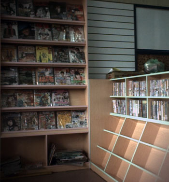
一本漫畫，我從兩點二十看到四點整，等我清醒時，漫畫到底畫了什麼我完全不知道。
這時外面的雨已經停了，地面也是乾的，太陽西曬，挺刺眼。
一休息就拖到下午四點，現在人還在嘉義民雄...，出發已經七個小時，我還在這邊打混
今天不知道能夠騎到哪裡呢？雲林，彰化，還是台中？
今天看來又要晚上八、九點才到的了目的地了。
晚餐吃的是7-11的漢堡+大多多，味道還可以啦。74元一餐。
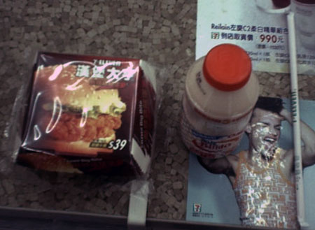
今天值得寫的東西有：
路上有土狗用很無辜的臉咬著籃子再賣菱角。
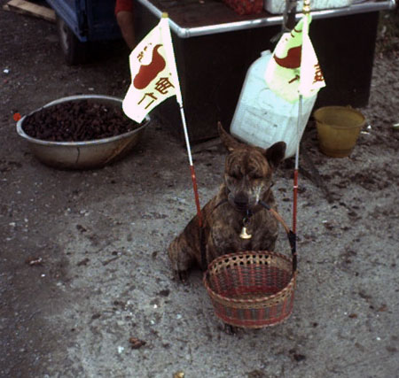
有很多的鵝，跟小鵝，看起來不錯吃，西門町有一家黑道開的鴨肉扁，就是專賣鵝肉。
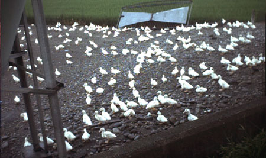
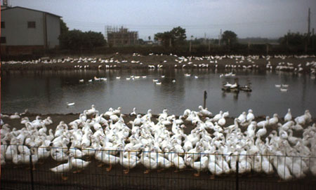
南部特有的油價激烈競爭！
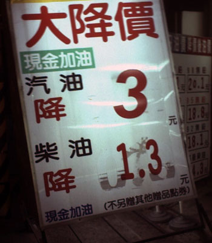
以及我沒看過的加油站新品牌。
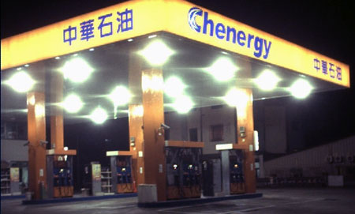
騎呀騎∼風景不變∼只有路標在變。所以內容略過，晚上九點半到達台中。
不知道要睡哪裡，那就試試看自己再單車版提出來的『包台一百元，過夜睡網咖』方案。
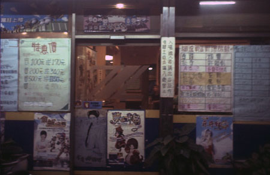
晚上九點半在台中市，找到這一家網咖，包台八小時一百元，我從九點半開始包，一共是165元。
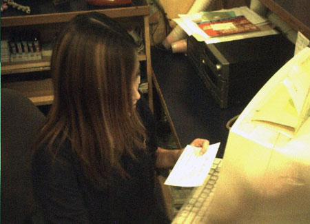
店內的小姐很漂亮，但是害羞不讓我拍照，好心男店員也煮了杯香濃的咖啡請我喝。 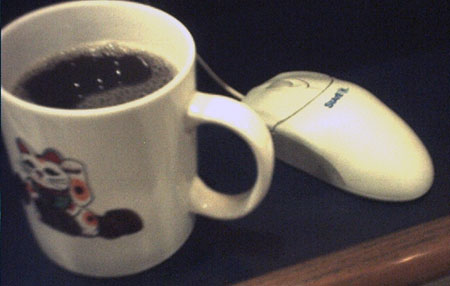
網咖寫遊記中，等等再想辦法將它弄上網路..
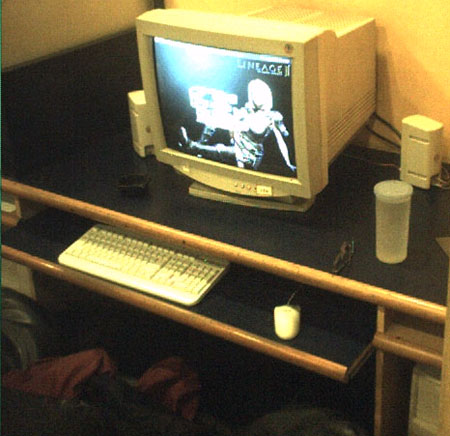
包台到現在已經四個小時，我還沒有碰過這裡的電腦。
明天計畫要從台中一口氣騎回台北，這樣環島就完成了！
本日花費：早餐44元，午餐45元，晚餐74元，網咖165元，宵夜滑蛋牛肉飯60元，一共388元。
|